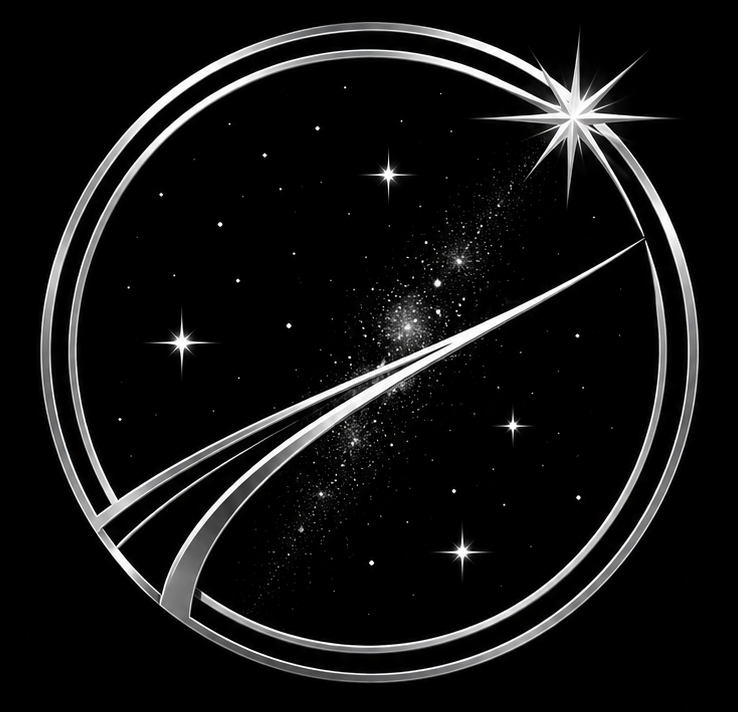

Scuola di Astronomia
Lezioni strutturate per comprendere stelle, pianeti, galassie, nebulose, ammassi, coordinate celesti e fenomeni astronomici.
Inizia a studiare →
Un percorso nell'astronomia, dall'orientamento sotto le stelle alle basi dell'osservazione e dell'astrofotografia.
AD ASTRA nasce per chi vuole comprendere il cielo partendo dalle basi, imparare a osservare e acquisire progressivamente gli strumenti necessari per avvicinarsi all'astronomia e all'astrofotografia.
Lezioni strutturate per comprendere stelle, pianeti, galassie, nebulose, ammassi, coordinate celesti e fenomeni astronomici.
Inizia a studiare →Impara a orientarti, riconoscere le costellazioni, utilizzare mappe celesti e programmare una sessione osservativa.
Vai alle guide →Dalle prime immagini del cielo ai concetti fondamentali di acquisizione, inseguimento, stacking ed elaborazione.
Scopri come iniziare →Una guida periodica per sapere cosa osservare: costellazioni, pianeti, Luna, congiunzioni, sciami meteorici e principali oggetti del cielo profondo.
Scopri il cielo di questo mese →Planetario online per esplorare il cielo direttamente dal browser.
Apri Stellarium Web →Dati astronomici, fasi lunari, pianeti, eventi e fenomeni celesti.
Consulta le effemeridi →Programmi selezionati per astronomia e astrofotografia, con collegamenti alle fonti ufficiali.
Scopri i software →Una raccolta essenziale di materiali didattici, manuali, documenti e risorse.
Vai alla biblioteca →Astronomia, ricerca scientifica, missioni spaziali e fenomeni celesti.

In questo spazio compariranno le notizie e gli approfondimenti più recenti.
Leggi di più →
Missioni, sonde, telescopi e nuove esplorazioni del Sistema Solare.
Leggi di più →
Fenomeni osservabili, eventi celesti e appuntamenti da non perdere.
Leggi di più →Schede, poster e materiali visuali dedicati ai principali argomenti astronomici, pensati per studio, divulgazione e consultazione.
Vai ai Poster →Un fumetto che racconta astronomia, scienza e curiosità sull'Universo attraverso avventura, ironia e divulgazione.
Scopri il fumetto →